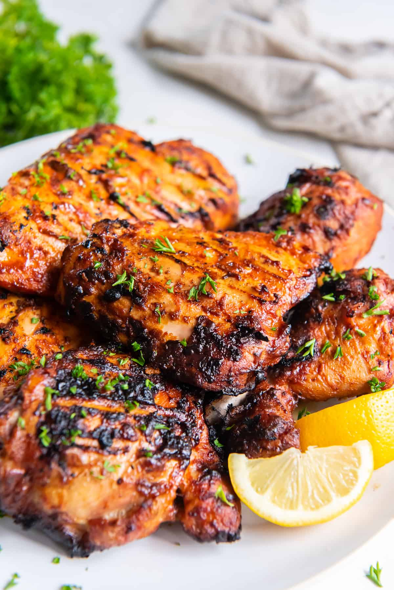

Smoked Paprika Chicken
Home

Description
This tender Grilled Paprika Chicken is marinated in a vibrant, flavor-packed Greek yogurt marinade spiked with smoked paprika and a little Sriracha. Gorgeous color and incredible smoky flavor!
Ingredients
- Bonless Chicken
- Plain Greek yogurt
- Smoked Paprika
- Minced Garlic
- Virgin Olive Oil
- Lemon
Directions
- Add all marinade ingredients to a small bowl
- Whisk the creamy mixture until well combined.
- Place the chicken pieces in a zippered plastic storage bag and spoon the marinade over the top.
- Seal the bag and move the chicken around inside the bag until the marinade is evenly distributed and all the pieces are coated. Place the bag in the refrigerator for 2 to 3 hours
- Coat your charcoal or gas grill grate with olive oil or nonstick cooking spray.
- Grill the chicken over medium heat for approximately 6 to 7 minutes per side or until the internal temperature of the thickest portion of chicken reads 165 degrees F when measured with a meat thermometer. The cooking time will vary based on the size and thickness of your chicken pieces.